前言
卷积神经网络是很多任务尤其是计算机视觉任务的基础，但很大程度上，模型需要的大量卷积计算限制了模型的可用性。因此，如何快速的完成卷积操作就至关重要。
此处的卷积是指图像处理领域的卷积操作，且数据通常为多通道的二维数组，卷积核的长宽相等。
常用的优化方法包括三个方面：
- 硬件：堆数据堆模型再堆硬件是提升性能最常见的手段，本文假设读者都是买不起煤气灶的穷人
- 模型复杂度：降低模型复杂度包括降低参数冗余的花式的卷积设计，如ShuffleNet中的分组卷积+通道混合，MobileNet中的Depthwise和Pointwise分解卷积等，以及模型的裁剪、量化和稀疏化。
- 框架计算速度：目前主流的深度学习框架在加快计算上，一方面是利用数据SIMD的特性，进行硬件上并行化（SSE、Neon、线程并行），又或者通过一些矢量化手段（如Caffe、MXNet中的im2col）来充分利用软硬件的特点，实现更高的计算速度，另一方面则是像FFT、Strassen算法以及Winograd算法等在卷积计算原理上不同的方法，从而减少了计算量。
本文介绍的 Winograd 是存在已久最近被重新发现的方法（The Coppersmith-Winograd Matrix Multiplication Algorithm），在大部分场景中，Winograd 方法都显示和较大的优势，目前TF Lite、Tencent NCNN、Ali MNN 中计算卷积就使用了该方法。详述该方法并进行测试的是CVPR 2016中的一篇文章《Fast Algorithms for Convolutional Neural Networks》，本文主要以该文章来进行方法的介绍和讲解。
贴两张ARM报告的图来说明一下问题，换言之，我们的问题是需要在模型（耗时操作主要是小型卷积核如3x3的卷积）和设备确定的情况下，在Inference阶段尽可能快地计算卷积结果。
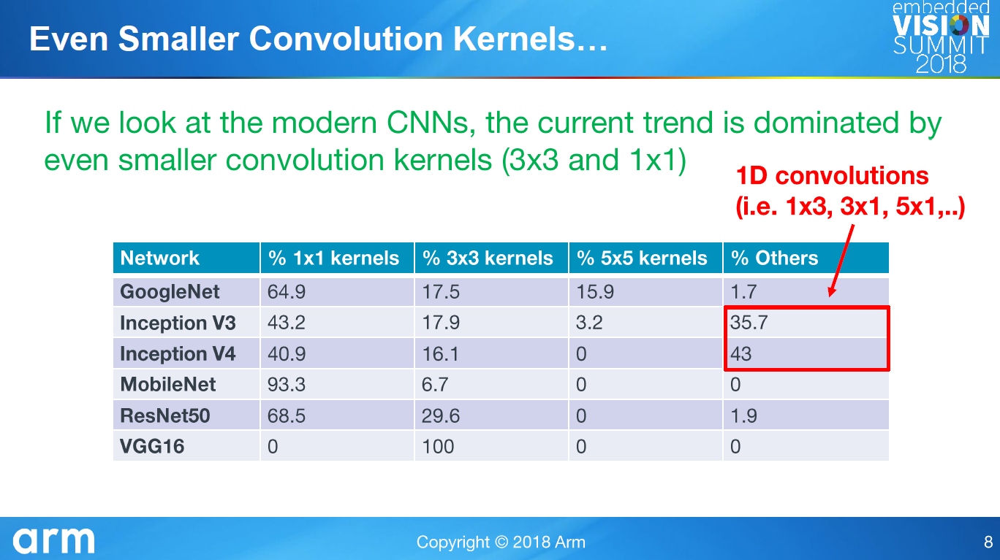
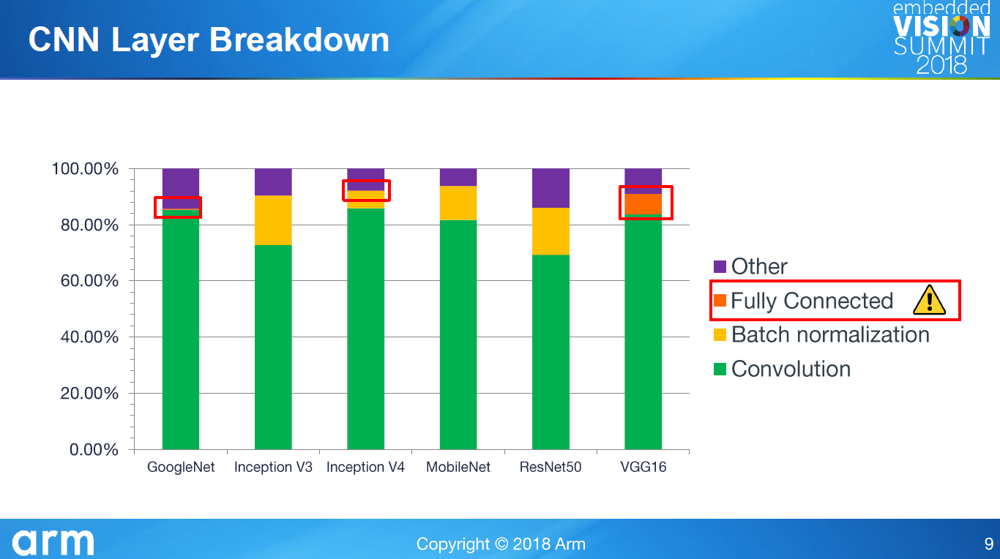
卷积问题定义
符号
$Image_{H\cdot W\cdot C}$:表示一张多通道（通常为三通道的）图片，使用$I$表示，下标视情况省略，当$C$为1时，表示灰度图，当$W$为1时，表示一维数据
$Kernel_{R\cdot R}$：表示一个大小为$R$的二维卷积核，使用$K$表示
$Height/Row,Width/Col,Channel/Depth$：分别表示一张图片的行，列，通道数
$I_{OH\cdot OW \cdot OC}=Conv(I_{H\cdot W \cdot C},K_R)$：表示使用卷积核$K$对图像$I$进行卷积操作，得到一张新的图像，为了和论文中一致，我们也使用$F(I_{OH\cdot OW \cdot OC},K_R)$来表示上述操作。
一维卷积
- 形式:$I_{OH}=Conv(I_{H},K_R)$或$F(I_{OH},K_R)$
输出的图像大小取决于卷积核大小、Stride以及Padding策略，在这里我们假设Stride都是1，没有Padding，且只统计乘法运算，则
- 计算量：$FLO=OH\cdot R=(H-R+1)\cdot R$
二维卷积
- 形式:$I_{OH\cdot OW \cdot OC}=Conv(I_{H\cdot W\cdot C},K_R)$或$F(I_{OH\cdot OW \cdot OC},K_R)$
多个通道的二维卷积遵循层内连乘，层间累加的方法，需要的卷积核数量为$C\cdot OC$:
- 计算量：$FLO=(OH\cdot OW \cdot OC)\cdot (R\cdot R)\cdot C$
具体而言，输出图片的每个通道都是通过一组卷积核在所有通道上相乘累加得到的。
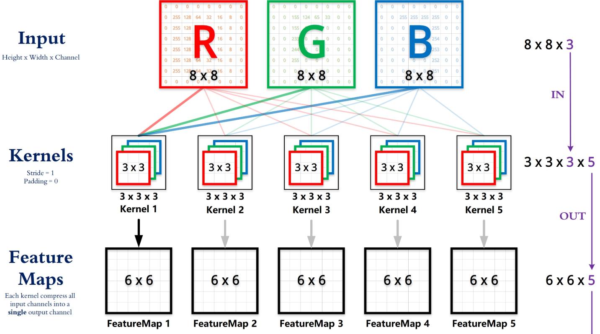
有兴趣的童鞋可以自己算一下需要的加法操作次数，智障作者算了一下应该是$OP=(OH\cdot OW \cdot OC)\cdot ((R\cdot R-1)\cdot C+C-1)=(OH\cdot OW \cdot OC)\cdot (R\cdot R\cdot C-1)$次，和乘法基本相同。
具体讨论算法的时候我们假设输入输出的通道数都是1，即$FLO=(OH\cdot OW)\cdot (R\cdot R)$。
- 形式:$I_{OH\cdot OW}=Conv(I_{H\cdot W},K_R)$或$F(I_{OH\cdot OW},K_R)$
注意点
在各种开源框架中，CNN中的conv2d层执行的并不是数学上的卷积计算，而是数学上的互相关计算，具体定义的区别请参考《深度学习》Chap9.1或者这个。
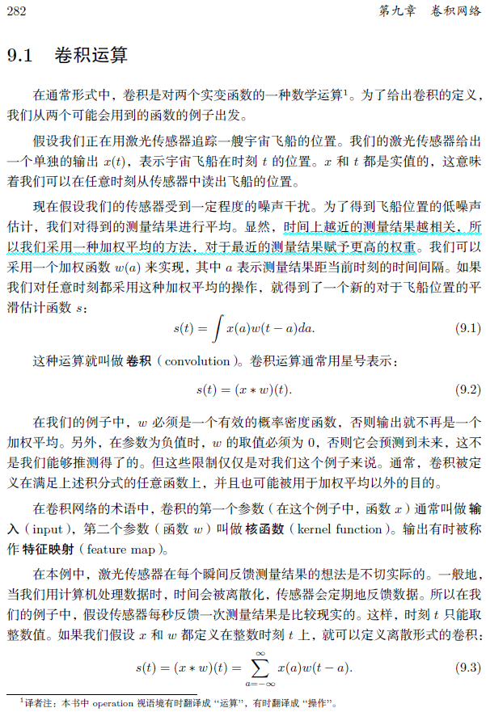
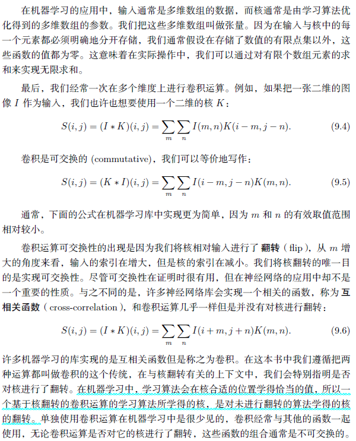
在传统的图像处理领域，卷积核的参数是已知的（且往往是对称的），而在卷积神经网络中则成为了待定参数。实际上，虽然说将卷积核上下翻转并左右翻转（即旋转180度）才是真正的卷积操作，但是也可以认为卷积层做的就是卷积，只是特征矩阵是倒序存储的。又或者说由于卷积核的参数是可变的，这样做不但提高了效率也不影响结果。
跑题：im2col实现
im2col是一种非常容易理解的矢量化（Vectorization）手段，基于im2col和GEMM（ General Matrix Multiplication ）的方法可以获得较正常卷积计算较高的加速比，具体而言就是把我们每次进行卷积操作时涉及到的元素展开一个列向量，最终得到一个$I_{(R\cdot R)\cdot (OH\cdot OW)}$的矩阵，卷积核则拆成$K_{1\cdot (R\cdot R)}$的向量。
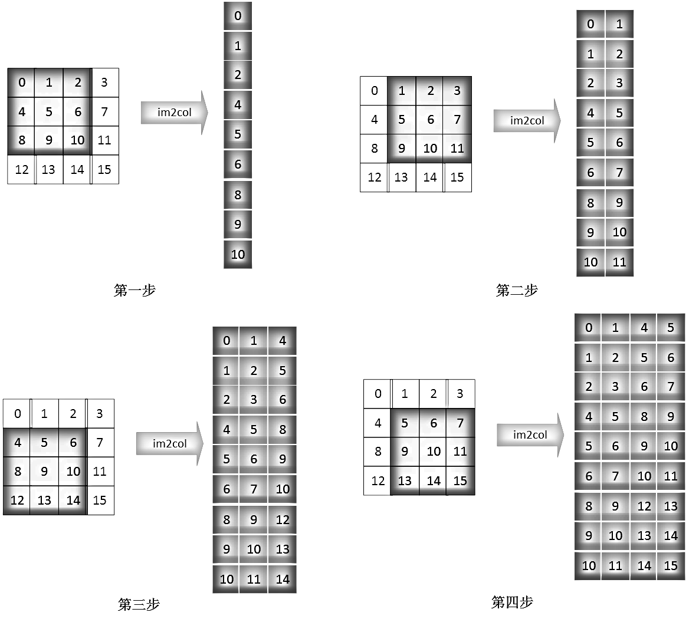
按照同样的方法把卷积核展开，最后卷积操作就可以用一个矩阵乘法来表示，计算完成后，再使用col2im将结果转换为图片。
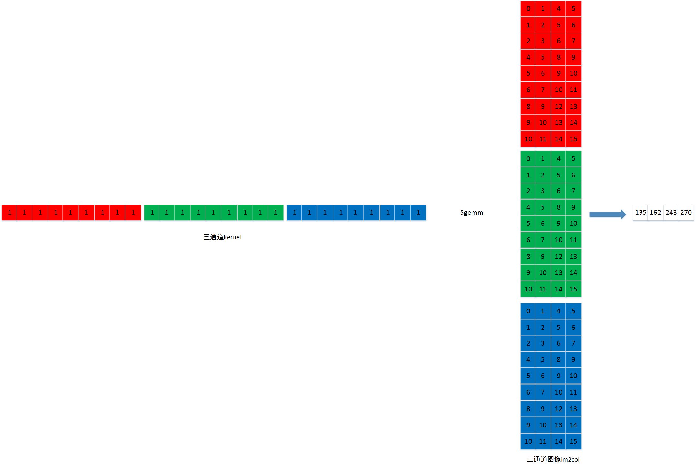
这里输入是3个通道，输出是1个，相比写4个for循环，im2col大大加快了计算速度（矩阵乘法可并行，数据在内存中的存储连续，Cache命中率提高），但是没有减少计算量，且内存占用几乎倍增，另外，生成多通道矩阵依然需要写5个循环（NHWCRR），算是一种用空间来换取时间的做法。关于Caffe中im2col和col2im的实现可以看这里，具体的实现细节其实和我们理解的过程是有较大不同的。
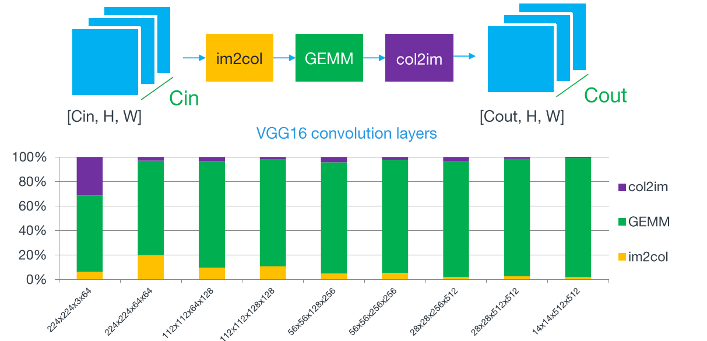
需要强调的一点是，由于我们的硬件设计就是良好支持并行化的，所以算得少和算得快并不能简单的认为是一回事。
Caffe原作者贾扬清对其框架中卷积实现的吐槽可以看这里，摘录一段如下：
In the last few months chatting with people about Caffe, a common comment I got was: “Caffe’s convolution has some memory issues.”
While this is true in some sense, I am not sure whether it is truly an issue - rather, it is a graduate-student level design choice when I was writing the Caffe framework in just 2 months’ budget with a looming thesis deadline. It turns out to have its own pros (faster than any trivial implementation unless you optimize really seriously) and cons (large memory consumption). A more detailed explanation follows, if you are interested.
……
Thus, I took a simpler approach: reduce the problem to a simpler one, where others have already optimized it really well.
关于傅里叶变换计算卷积的方法在卷积神经网络中并不是很常用（因为一般还没直接算快），可以参看这个，Strassen则是在矩阵较大时具有较好的加速效果，具体的方法细节之后再详细说
（因为作者也没完全看懂╮(￣▽￣)╭）。
Winograd
方法
在我们的硬件受限的情况下（例如只有单核CPU），如何才能变得更高更快更强呢，由于计算一次乘法所需要的时钟周期要比计算一次加法大很多，对于乘法操作我们能够想象的下界是：输入数据的每个元素至少参与一次乘法。这也是我们力求达到的目标，即乘法次数尽可能的靠近下界。
形式化的表述，针对一个输出长度为$m$，卷积核大小为$r$的卷积运算，其所需要的最小乘法次数与输入数据的长度相同：
$$\mu(F(I_m, K_r))=m+r-1=H$$
每个维度相对独立，因此拓展到二维的情况也是一样的：
$$\begin{aligned} \mu(F(I_{m \cdot n}, K_{r \cdot s})) =\mu(F(I_{m}, K_{r})) \mu(F(I_{n}, K_{s})) =(m+r-1)(n+s-1) \end{aligned}=H \cdot W$$
该理论最早由Shmuel Winograd于1980年提出，是本文最重要的理论，没有之一。具体而言，给定一个确定的卷积问题，我们可以找到一种变换，来接近（甚至到达）乘法次数的理论下界。根据该理论，在卷积核较小的情况下，我们可以获得相对普通卷积计算而言较大的加速比。
$F(I_2,K_3)$与$F(I_{2\cdot 2},K_{3 \cdot 3})$
举个例子，$F(I_2,K_3)$表示输入信号$d=\left[ \begin{array}{llll}{d_{0}} & {d_{1}} & {d_{2}} & {d_{3}}\end{array}\right]^{T}$，卷积核$g=\left[ \begin{array}{lll}{g_{0}} & {g_{1}} & {g_{2}}\end{array}\right]^{T}$的一维卷积操作。那么问题就可以表示为如下的形式：
$$F(I_2,K_3) = \left[ \begin{array}{lll}{d_{0}} & {d_{1}} & {d_{2}} \\ {d_{1}} & {d_{2}} & {d_{3}}\end{array}\right] \left[ \begin{array}{l}{g_{0}} \\ {g_{1}} \\ {g_{2}}\end{array}\right]=\left[ \begin{array}{c}{r_0} \\ {r_1}\end{array}\right]$$
如果是一般的矩阵乘法，则需要6次乘法和4次加法，如下：
$$\begin{array}{l}{r_{0}=\left(d_{0} \cdot g_{0}\right)+\left(d_{1} \cdot g_{1}\right)+\left(d_{2} \cdot g_{2}\right)} \\ {r_{1}=\left(d_{1} \cdot g_{0}\right)+\left(d_{2} \cdot g_{1}\right)+\left(d_{3} \cdot g_{2}\right)}\end{array}$$
但是，卷积运算中输入信号转换成的矩阵不是任意矩阵，其中有规律地分布着大量的重复元素，因此卷积转换成的矩阵乘法比一般矩阵乘法的问题域更小，这就让优化存在了可能。
Winograd的具体做法是，
$$F(I_2,K_3) = \left[ \begin{array}{lll}{d_{0}} & {d_{1}} & {d_{2}} \\ {d_{1}} & {d_{2}} & {d_{3}}\end{array}\right] \left[ \begin{array}{l}{g_{0}} \\ {g_{1}} \\ {g_{2}}\end{array}\right]=\left[ \begin{array}{c}{m_{1}+m_{2}+m_{3}} \\ {m_{2}-m_{3}-m_{4}}\end{array}\right]$$
其中，
$$\begin{array}{ll}{m_{1}=\left(d_{0}-d_{2}\right) g_{0}} & {m_{2}=\left(d_{1}+d_{2}\right) \frac{g_{0}+g_{1}+g_{2}}{2}} \\ {m_{4}=\left(d_{1}-d_{3}\right) g_{2}} & {m_{3}=\left(d_{2}-d_{1}\right) \frac{g_{0}-g_{1}+g_{2}}{2}}\end{array}$$
在神经网络的推理阶段，卷积核$g$上的元素是固定的，共3次加法与2次乘法，因此$g$相关的运算可以提前算好，预测阶段只需计算一次，可以忽略，所以一共所需的运算次数4次乘法和8次加法/减法，和下界一致。 速度提升比例为1.5倍。当然所需要的存储空间也相应的增加，由原来的$r$增加为$H$，即从卷积核大小变成了输入数据的宽度。
可是这怎么就能减少计算量呢，会不会得到的结果不一样？有兴趣的童鞋可以自行把所有符号代入化简，针对这个例子，得到的结果是完全相同的！当然在具体计算的时候可能会存在浮点精度误差。因此在这个例子里面完全就是仅仅使用不同的数学表示就达到了减少计算量的目的，真是太巧妙了。
一维卷积形式化表述
上述例子可以用通用矩阵乘法（GEMM）和元素级乘法（EWMM）的混合矩阵变换来形式化表述。
一维卷积的形式化表述如下：
$$Y=A^{T}\left[(G g) \odot\left(B^{T} d\right)\right]$$
详细解释如下：
- $g$：卷积核 ，维度$r\cdot 1$
- $d$：输入信号，维度$H\cdot 1$
- $G$：Filter transform矩阵，用于将卷积核变换到另一个空间，维度$(m+r-1)\cdot r=H \cdot r$
- $B^T$：Input transform矩阵，用于将输入数据变换到另一个空间，维度$(m+r-1)\cdot (m+r-1)=H \cdot H$
- $A^T$：Output transform矩阵，用于将数据转换回输出空间，维度$m\cdot (m+r-1)=m*H$
- $Y$：卷积结果，维度$m\cdot 1$
其中，$\odot$表示对应位置相乘，暗示此处两个矩阵的维度是一致的，上面的例子里面具体的参数如下，
$$
B^{T}=\left[ \begin{array}{cccc}{1} & {0} & {-1} & {0} \\ {0} & {1} & {1} & {0} \\ {0} & {-1} & {1} & {0} \\ {0} & {1} & {0} & {-1}\end{array}\right]
$$
$$
G=\left[ \begin{array}{ccc}{1} & {0} & {0} \\ {\frac{1}{2}} & {\frac{1}{2}} & {\frac{1}{2}} \\ {\frac{1}{2}} & {-\frac{1}{2}} & {\frac{1}{2}} \\ {0} & {0} & {1}\end{array}\right]
$$
$$
A^{T}=\left[ \begin{array}{llll}{1} & {1} & {1} & {0} \\ {0} & {1} & {-1} & {-1}\end{array}\right]
$$
$$
g=\left[ \begin{array}{lll}{g_{0}} & {g_{1}} & {g_{2}}\end{array}\right]^{T},d=\left[ \begin{array}{llll}{d_{0}} & {d_{1}} & {d_{2}} & {d_{3}}\end{array}\right]^{T}
$$
整个计算过程在逻辑上可以分为4步：
- Input transform
- Filter transform
- Hadamard product（ 哈达玛积 ）
- Output transform
此处，$A^{T}$即$m$前面的系数，$B^{T}$即数据$d$前面的系数，$G$即卷积核$g$前面的系数，由于卷积核相关参数是提前计算好的，虽然我们将卷积的过程表述成了矩阵乘法的形式，但是此处只有$\odot$包含了乘法，其他的系数全是$\pm 1$，因此只有加减法。之后会提到具体如何实现，有兴趣的同学可以先自己思考一下下。
二维卷积形式化表述
文中关于一维卷积向二维卷积的扩展只有寥寥数语：
A minimal 1D algorithm $F(m, r)$ is nested with itself to obtain a minimal 2D algorithm.
The nesting technique can be generalized for non-square filters and outputs,$F(m × n, r × s)$,
by nesting an algorithm for $F(m, r)$ with an algorithm for $F(n, s)$.
文中给出的二维卷积形式化表述如下：
$$
Y=A^{T}\left[\left[G g G^{T}\right] \odot\left[B^{T} d B\right]\right] A
$$
详细解释如下：
- $g$：卷积核 ，维度$r\cdot r$
- $d$：输入信号，维度$H\cdot H$
- $G$：Filter transform矩阵，用于将卷积核变换到另一个空间，维度$(m+r-1)\cdot r=H \cdot r$
- $B^T$：Input transform矩阵，用于将输入数据变换到另一个空间，维度$(m+r-1)\cdot (m+r-1)=H \cdot H$
- $A^T$：Output transform矩阵，用于将数据转换回输出空间，维度$m\cdot (m+r-1)=m*H$
- $Y$：卷积结果，维度$m\cdot m$
对于$F(I_{2\cdot 2},K_{3 \cdot 3})$，其中所有矩阵中的参数，包括$G$，$B^T$，$A^T$都是和$F(I_2,K_3)$一样的。
依然只有$\odot$包含了乘法，乘法的次数为16次，相比于标准卷积的次数$36=2\times 2 \times 3 \times 3$，速度提升比例为2.25倍。其中Input transform包括$32=4\times 4 \times 2$次加法，Filter transform包括28次浮点数操作（预先计算），Output transform（Inverse transform）包括$24=2\times 2 \times 3 \times 2$次加法。
等等，怎么就nested with itself了，参数还是一样的？
那么问题来了：
- 二维卷积的形式化表述是否正确，如何证明
- 通常输入的图像尺寸都较大，如何使用Winograd对其进行卷积计算，难道要实现$F(I_{448\cdot 448}, K_{3 \cdot 3})$吗，三维的卷积（卷积神经网络中的实际情况）该如何实现
- 上面形式化表示中所使用的矩阵参数该如何获得
- 形式化表示中的矩阵乘法看起来似乎比常规卷积做了更多的乘法操作，真正的算法实现是如何转换成加法的
二维卷积形式化推导
我们先来解决第一个问题，要完成形式化的推导，我们需要先理解文章中的nested with itself到底是什么意思。下列图片来自ARM在Embedded Vision Summit 2018上的Slides，里面的符号表示会略有不同（ 用$k$来表示输入，$w$表示权重，$r$表示输出 ）。
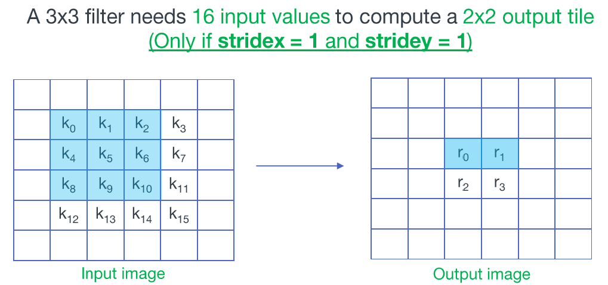
我们以$F(I_{2\cdot 2},K_{3 \cdot 3})$为例，输入图片是$4\times 4$的，输出是$2\times 2$的，卷积核如下：
$$
W = \left[\begin{array}{lll}{w_{0}} & {w_{1}} & {w_{2}} \\ {w_{3}} & {w_{4}} & {w_{5}} \\ {w_{6}} & {w_{7}} & {w_{8}}\end{array}\right]
$$
根据我们之前对标准卷积的运算次数推导，$FLO=(OH\cdot OW \cdot OC)\cdot (R\cdot R)\cdot C=36$，$OP=(OH\cdot OW \cdot OC)\cdot (R\cdot R\cdot C-1)=32$，即需要36次乘法和32次加法。
现在我们按照im2row的形式展开卷积流程，可以得到如下的矩阵运算：
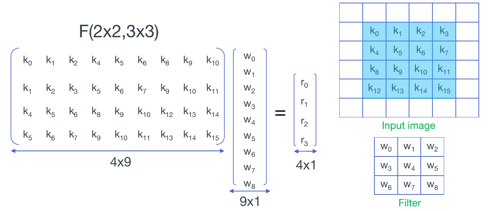
仔细观察可以发现，左侧矩阵中的部分元素是重复出现的，我们按照相同的颜色对其进行标记，并以此来进行矩阵和向量的分块操作：
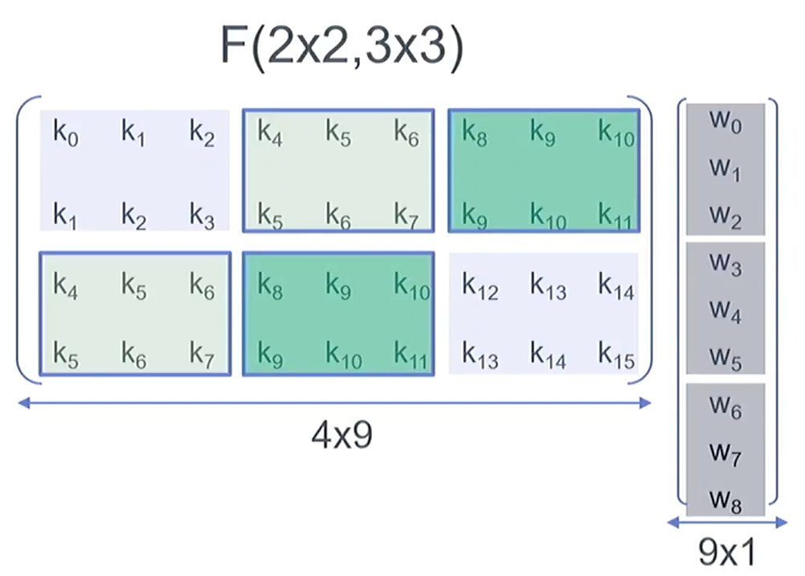使用更加简洁的表述，我们得到了如下所示的分块运算，现在问题的表述和$F(I_2,K_3)$完全一致了，不同的是我们的每一对元素操作都是$F(I_2,K_3)$，这就是$F(I_{2\cdot 2},K_{3 \cdot 3})$的堆叠实现：
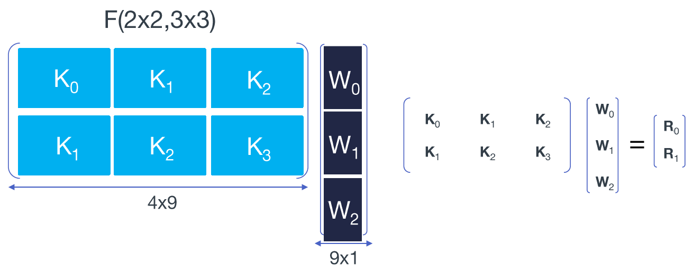
形式化的表述如下：
$$
\begin{aligned} \left[\begin{array}{lll}{K_0} & {K_1} & {K_2} \\ {K_1} & {K_2} & {K_3} \end{array}\right] \left[\begin{array}{l}{W_0} \\ {W_1} \\ {W_2} \end{array}\right] &= \left[\begin{array}{l}{R_0} \\ {R_1} \end{array}\right] = \left[\begin{array}{l}{K_0W_0+K_1W_1+K_2W_2} \\ {K_1W_0+K_2W_1+K_3W_2} \end{array}\right] \\ \\ &= \left[\begin{array}{l}{F_{(2,3)}(D_0,W_0)+F_{(2,3)}(D_1,W_1)+F_{(2,3)}(D_2,W_2)} \\ {F_{(2,3)}(D_1,W_0)+F_{(2,3)}(D_2,W_1)+F_{(2,3)}(D_3,W_2)} \end{array}\right] \end{aligned}
$$
其中，$D_i$是$K_i$对应的输入序列，也即卷积输入的第$i$行:
$$
D = d^T=\left[\begin{array}{llll} {k_0} & {k_4} & {k_8} & {k_{12}} \\ {k_1} & {k_5} & {k_9} & {k_{13}} \\ {k_2} & {k_6} & {k_{10}} & {k_{14}} \\ {k_3} & {k_7} & {k_{11}} & {k_{15}} \end{array}\right] = \left[\begin{array}{l} D_0 & D_1 & D_2 & D_3 \end{array}\right]
$$
我们一共使用6个$F(I_2,K_3)$来计算$F(I_{2\cdot 2},K_{3 \cdot 3})$，并额外增加了8次加法，之前提到$F(I_2,K_3)$一共所需的运算次数为4次乘法和8次加法，所以计算时期共计24次乘法与48次加法， 速度提升比例为1.5倍。在卷积核预处理阶段，需要进行8次乘法和12次加法。
有兴趣的童鞋可以思考一下为什么是48次加法，因为数据有部分重复，数据变换（Input transform）只需要做4次，此处共计16次加法，而Output transform则是6次，共计24次加法，另外还有8次额外的加法（虽然只有4个加号却是8次）。
之前曾经提到，最小的乘法次数应该和输入的数据规模相等，因此这还不是最高的加速比（最高应该是$2.25=36\div 16$倍），还记得我们之前的一维卷积形式化表述吗，下面的图片中的所有表述和$F(I_2,K_3)$是完全一致的，但是每个元素都用矩阵和向量替换了：
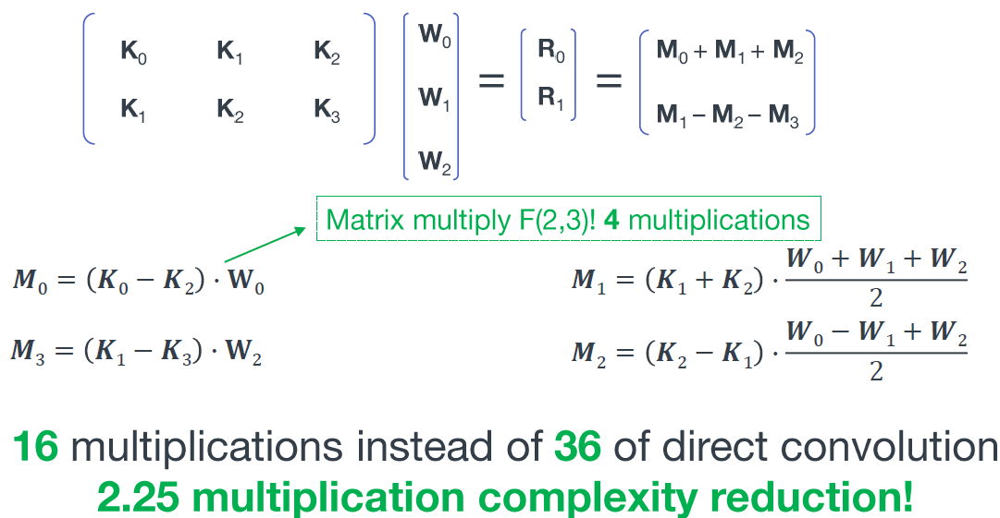
按照这种方式，我们可以得到$F(I_{2\cdot 2},K_{3 \cdot 3})$的嵌套实现，形式化的表述如下：
$$
\begin{aligned} \left[ \begin{array}{c}{R_0} \\ {R_1}\end{array}\right] &= \left[ \begin{array}{c}{K_0 W_0 + K_1 W_1 + K_2 W_2} \\ {K_1 W_0 + K_2 W_1 + K_3 W_2} \end{array} \right] \\ \\ &= \left[\begin{array}{l}{F_{(2,3)}(D_0,W_0)+F_{(2,3)}(D_1,W_1)+F_{(2,3)}(D_2,W_2)} \\ {F_{(2,3)}(D_1,W_0)+F_{(2,3)}(D_2,W_1)+F_{(2,3)}(D_3,W_2)} \end{array}\right] \\ &= \left[ \begin{array}{c} {A^{T}\left[(G W_0) \odot\left(B^{T} D_0 \right)\right] + A^{T}\left[(G W_1) \odot\left(B^{T} D_1 \right)\right] + A^{T}\left[(G W_2) \odot\left(B^{T} D_2 \right)\right]} \\ {A^{T}\left[(G W_0) \odot\left(B^{T} D_1 \right)\right] + A^{T}\left[(G W_1) \odot\left(B^{T} D_2 \right)\right] + A^{T}\left[(G W_2) \odot\left(B^{T} D_3 \right)\right]} \end{array} \right] \\ \\ &=A^{T}\left[\left[G [W_0 \ W_1 \ W_2 ] G^{T}\right] \odot\left[B^{T} [D_0 \ D_1 \ D_2 \ D_3] B\right]\right]A \\ \\ &=A^{T}\left[\left[G w G^{T}\right] \odot\left[B^{T} d B\right]\right] A \\ \\ &\textit{(…w => g…)} \\ \\ &=A^{T}\left[\left[G g G^{T}\right] \odot\left[B^{T} d B\right]\right] A \end{aligned}
$$
中间的一步变化很关键，$\left[(G W_i) \odot\left(B^{T} D_j \right)\right]$是一个长度为4的列向量,$A^{T}\left[(G W_i) \odot\left(B^{T} D_j \right)\right]$则是一个长度为2的列向量，$A^{T}\left[(G W_0) \odot\left(B^{T} D_0 \right)+ (G W_1) \odot\left(B^{T} D_1 \right) + (G W_2) \odot\left(B^{T} D_2 \right)\right]$ 方括号内对应位置相乘再相加，相当于在每组相点乘结果构成的行向量上做卷积。最后的结果是一个长度为2的列向量。
实际上两种表述的维度并不相同，前者的维度是$I_{4\cdot 1}$，后者是$I_{2\cdot 2}$。
此处的推导过于复杂，作者并不会，有兴趣的童鞋可以去试一下这段代码:
from sympy import Symbol, Matrix,pprint,simplify
import numpy as np
BT = Matrix([
[1, 0, -1, 0],
[0, 1, 1, 0],
[0, -1, 1, 0],
[0, 1, 0, -1]
])
G = Matrix([
[2, 0, 0],
[1, 1, 1],
[1, -1, 1],
[0, 0, 2]
])
G=G/2
AT = Matrix([
[1, 1, 1, 0],
[0, 1, -1, -1]
])
g = Matrix(3, 3, [Symbol(f'g{i}') for i in range(3*3)])
d = Matrix(4, 4, [Symbol(f'd{i}') for i in range(4*4)])
m = Matrix(4, 4, [Symbol(f'm{i}') for i in range(4*4)])
print('GgGT:')
GgGT=G*g*(G.T)
pprint(GgGT)
print('BTdB')
BTdB=BT*d*(BT.T)
pprint(BTdB)
RET1=(AT*np.multiply(GgGT,BTdB)*(AT.T))
print('AT * [GgGT em BTdB] * A ,shape={shape},first:'.format(shape=RET1.shape))
pprint(simplify(RET1[0]))
R0=(AT*np.multiply(G*g[0,:].T,BT*d[0,:].T)+AT*np.multiply(G*g[1,:].T,BT*d[1,:].T)+AT*np.multiply(G*g[2,:].T,BT*d[2,:].T))
R1=(AT*np.multiply(G*g[0,:].T,BT*d[1,:].T)+AT*np.multiply(G*g[1,:].T,BT*d[2,:].T)+AT*np.multiply(G*g[2,:].T,BT*d[3,:].T))
print('R0 ,shape={shape},first:'.format(shape=R0.shape))
pprint(simplify(R0[0]))
print('Diff of first:')
pprint(simplify(RET1[0]-R0[0]))
print('Diff of all:')
print(simplify(RET1-np.vstack((R0.T,R1.T))))
经过这样一番推导（虽然最关键的一步跳过了，嘻嘻嘻）我们就可以得到$F(I_{2\cdot 2},K_{3 \cdot 3})$的嵌套实现，
$$
F(I_{2\cdot 2},K_{3 \cdot 3})= A^{T} \left[ U \odot V \right] A
$$
其中，$U = G g G^{T},V = B^{T} d B$，一共需要 16次乘法和56次加法（$V = B^{T} d B$过程32次加法、$M=U \odot V$过程16次乘法、$Y=A^TMA$过程24次加法）。和一维卷积类似的，所需要的存储空间也相应的增加，由原来的$r\cdot r$增加为$H\cdot W$，即从卷积核大小变成了输入数据的宽度。
扩展到$F(I_{4\cdot 4},K_{3 \cdot 3})$
算法本身可以被扩展到更大的输入输出尺寸，从而可能得到更高的加速比，但是参数数量和加法操作次数也相应的大大增加。
要计算$F(I_{4\cdot 4},K_{3 \cdot 3})$，我们的输入是$6\times 6$的图片，常规卷积的操作需要计算$144=4\times 4\times 3\times3$次乘法，但是使用Winograd只需要$36=6\times 6$次乘法，速度提升比例为4倍。具体参数如下：
$$
B^{T}=\left[\begin{array}{rrrrrr}{4} & {0} & {-5} & {0} & {1} & {0} \\ {0} & {-4} & {-4} & {1} & {1} & {0} \\ {0} & {4} & {-4} & {-1} & {1} & {0} \\ {0} & {-2} & {-1} & {2} & {1} & {0} \\ {0} & {2} & {-1} & {-2} & {1} & {0} \\ {0} & {4} & {0} & {-5} & {0} & {1}\end{array}\right]
$$
$$
G=\left[\begin{array}{rrr}{\frac{1}{4}} & {0} & {0} \\ {-\frac{1}{6}} & {-\frac{1}{6}} & {-\frac{1}{6}} \\ {-\frac{1}{6}} & {\frac{1}{6}} & {-\frac{1}{6}} \\ {\frac{1}{24}} & {\frac{1}{12}} & {\frac{1}{6}} \\ {\frac{1}{24}} & {-\frac{1}{12}} & {\frac{1}{6}} \\ {0} & {0} & {1}\end{array}\right]
$$
$$
A^{T}=\left[\begin{array}{rrrrrr}{1} & {1} & {1} & {1} & {1} & {0} \\ {0} & {1} & {-1} & {2} & {-2} & {0} \\ {0} & {1} & {1} & {4} & {4} & {0} \\ {0} & {1} & {-1} & {8} & {-8} & {1}\end{array}\right]
$$
The number of additions and constant multiplications required by the minimal Winograd transforms increases quadratically with the tile size. Thus for large tiles, the complexity of the transforms will overwhelm any savings in the number of multiplications.
The magnitude of the transform matrix elements also increases with increasing tile size. This effectively reduces the numeric accuracy of the computation, so that for large tiles, the transforms cannot be computed accurately.
但是浮点操作次数也大大增加了，其中Input transform包括$144=12\times (6+6)$次浮点数操作（注意此时的系数已经不全是1了，因此也会包括乘法），Filter transform包括72次浮点数操作（预先计算），Output transform（Inverse transform）包括$100=10\times (6+4)$次浮点数操作。
此外，转换矩阵的规模增大导致了计算精度误差增加，不过作者认为卷积神经网络对精度的要求其实比较低，因此在附录中讨论了$F(I_{6\cdot 6},K_{3 \cdot 3})$的可能性，其参数如下：
$$
B^{T}=\left[\begin{array}{rrrrrrrr} {1} & {0} & {-21/4} & {0} & {21/4} & {0} & {-1} & {0} \\ {0} & {1} & {1} & {-17/4} & {-17/4} & {1} & {1} & {0} \\ {0} & {-1} & {1} & {17/4} & {-17/4} & {-1} & {1} & {0} \\ {0} & {1/2} & {1/4} & {-5/2} & {-5/4} & {2} & {1} & {0} \\ {0} & {-1/2} & {1/4} & {5/2} & {-5/4} & {-2} & {1} & {0} \\ {0} & {2} & {4} & {-5/2} & {-5} & {1/2} & {1} & {0} \\ {0} & {-2} & {4} & {5/2} & {-5} & {-1/2} & {1} & {0} \\ {0} & {-1} & {0} & {21/4} & {0} & {-21/4} & {0} & {1} \end{array}\right], \\ G=\left[\begin{array}{rrr} {1} & {0} & {0} \\ {-2/9} & {-2/9} & {-2/9} \\ {-2/9} & {2/9} & {-2/9} \\ {1/90} & {1/45} & {2/45} \\ {1/90} & {-1/45} & {2/45} \\ {32/45} & {16/45} & {8/45} \\ {32/45} & {-16/45} & {8/45} \\ {0} & {0} & {1} \end{array}\right], \\ A^{T}=\left[\begin{array}{rrrrrrrr} {1} & {1} & {1} & {1} & {1} & {1} & {1} & {0} \\ {0} & {1} & {-1} & {2} & {-2} & {1/2} & {-1/2} & {0} \\ {0} & {1} & {1} & {4} & {4} & {1/4} & {1/4} & {0} \\ {0} & {1} & {-1} & {8} & {-8} & {1/8} & {-1/8} & {0} \\ {0} & {1} & {1} & {16} & {16} & {1/16} & {1/16} & {0} \\ {0} & {1} & {-1} & {32} & {-32} & {1/32} & {-1/32} & {1} \\ \end{array}\right]
$$
相比直接卷积324次的乘法操作，$F(I_{6\cdot 6},K_{3 \cdot 3})$只需要64次，加速比达到5.06倍（然而并没有）。我们目前讨论的都是$3\times 3$的卷积，只是tile大小不同。
基于Winograd的卷积计算算法流程
第二个问题，其实我们并不会真的去实现$F(I_{448\cdot 448}, K_{3 \cdot 3})$，而是将图片划分成多个相同大小部分重叠的tile，在此基础上使用如$F(I_{2\cdot 2},K_{3 \cdot 3})$的方式来计算，最后合并统计结果。对于三维卷积，实际上是和标准卷积一样，逐层做二维卷积，再每层对应位置结果相加。但除此之外，针对多个卷积核还有更加巧妙的做法。
算法流程
tile在此处代表一个图像块，具体划分方式如下：
下图展示了标准卷积和Winograd $F(I_{2\cdot 2},K_{3 \cdot 3})$的区别,标准的卷积过程： ：
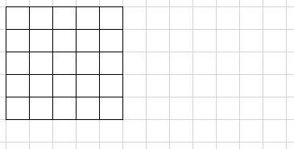
Winograd $F(I_{2\cdot 2},K_{3 \cdot 3})$:
前述只讨论了一些比较简单的情况，事实上在CNN中，由于输入的特征图只需要变换一次，而却会被多个滤波器复用，所以输入变换过程的额外开销会被平摊——卷积的滤波器（也即输出通道）越多，那么输入变换产生的额外开销的影响就越小。
多卷积核
参数推导（劝退节）
欧几里得定理（辗转相除法）
贝祖定理
扩展欧几里得定理
中国剩余定理CRT
拉格朗日插值法
Cook-Toom algorithm
Winograd Algorithm
实验
计算优化
算法复杂度分析
实验设定与结果
内存占用、优化技巧与加速比
$F(I_{2\cdot 2},K_{3 \cdot 3})$的加速比上限是2.25，$F(I_{4\cdot 4},K_{3 \cdot 3})$的加速比上限是4。
实现
矩阵参数获取
端侧推理
以$F(I_{2\cdot 2},K_{3 \cdot 3})$为例，我们来看看代码是如何实现的，代码来自Tencent NCNN。
- Filter Transform
- Input transform
- Hadamard product
- Output transform
$F(I_{4\cdot 4},K_{3 \cdot 3})$的实现就更加复杂，可以看参考资料中Tencent NCNN的实现。
跑题： NHWC、HCHW和NC/4HW4
我们在说NHWC时，实际上是说数据在内存上的排布策略，以及探讨该策略带来的访存性能变化。
NHWC与HCHW的区别用一张图就可以说清楚，其中我们的N=1，C=3，H=1，W=6：
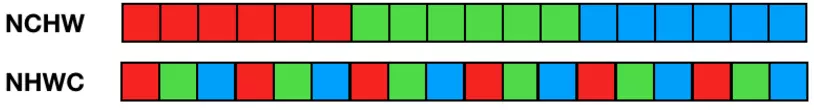
NHWC 的访存局部性更好（每三个输入像素即可得到一个输出像素），NCHW 则必须等所有通道输入准备好才能得到最终输出结果，需要占用较大的临时空间。
在 CNN 中常常见到 1x1 卷积（例如：用于移动和嵌入式视觉应用的 MobileNets），也是每个输入 channel 乘一个权值，然后将所有 channel 结果累加得到一个输出 channel。如果使用 NHWC 数据格式，可以将卷积计算简化为矩阵乘计算，即 1x1 卷积核实现了每个输入像素组到每个输出像素组的线性变换。
TensorFlow 为什么选择 NHWC 格式作为默认格式？因为早期开发都是基于 CPU，使用 NHWC 比 NCHW 稍快一些（不难理解，NHWC 局部性更好，cache 利用率高）。
NCHW 则是 Nvidia cuDNN 默认格式，使用 GPU 加速时用 NCHW 格式速度会更快（也有个别情况例外）。
最早接触到NC/4HW4是因为阿里的端侧推理框架MNN，不得不说这个框架真是太复杂了，随便拿一个技术点就能扯上半天。
NC/4HW4第一个4表示把原Feature map的通道按4分组不够补0，然后每组内的4个Feature map按照RGBA交织排列。
总结
- Winograd算法存在一定的计算精度损失。不过CNN模型需要的计算精度实际上很低，例如有用fp16、int8实现CNN的方法，也有用更低bit数甚至binary计算实现的方法，它们都有不错的ImageNet分类精度。
- Winograd算法可以用矩阵形式来表示，但是具体实现时，并不意味着要调用矩阵运算的接口，为了更快的计算速度，通常会直接将计算展开，故代码量较大，且对于不同的
tile大小需要专门定制的代码（好在也就那么几种），通常卷积核的大小为$2\times 2$到$7\times 7$。
参考资料
- 卷积神经网络中的Winograd快速卷积算法
- Winograd卷积原理
- 源于《孙子算经》的Cudnn
- Paper-CVPR 2016-Fast Algorithms for Convolutional Neural Networks
- Book-Shmuel Winograd.1980 Arithmetic complexity of computations
- 开源背后 | 面对端侧推理引擎的挑战，阿里工程师如何应对
- Tencent FeatherCNN实现
- Tencent NCNN 3x3实现
- 深度学习轻量级推理及加速
- 【移动端DL框架】当前主流的移动端深度学习框架一览
- Video-Fast Algorithms for Convolutional Neural Networks by Andrew Lavin and Scott Gray
- Video-Even Faster CNNs Exploring the New Class of Winograd Algorithms
- PPT-算法解析
- Paper-Sparse Winograd Convolutional neural networks on small-scale systolic arrays
- Code-参数生成 andravin/wincnn
- PPT-Fast Convolution


![[DL]Winograd快速卷积算法](/medias/featureimages/4.jpg)
![[动态规划]LeetCode-72.编辑距离](/medias/featureimages/7.jpg)